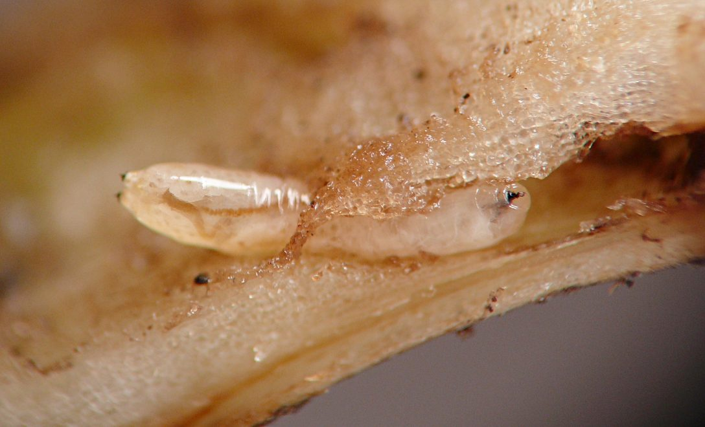
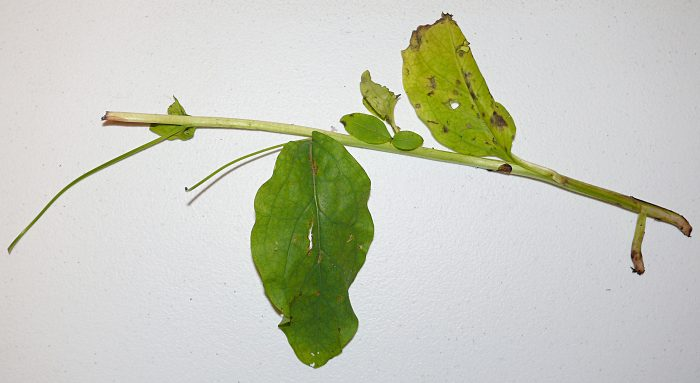
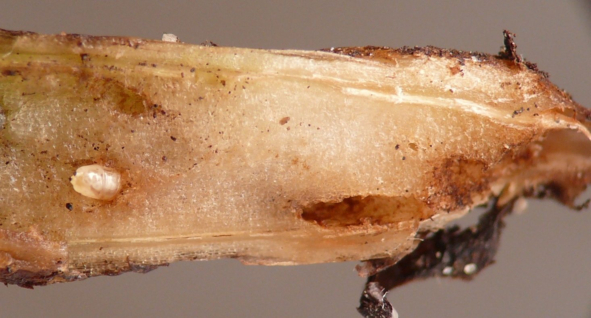
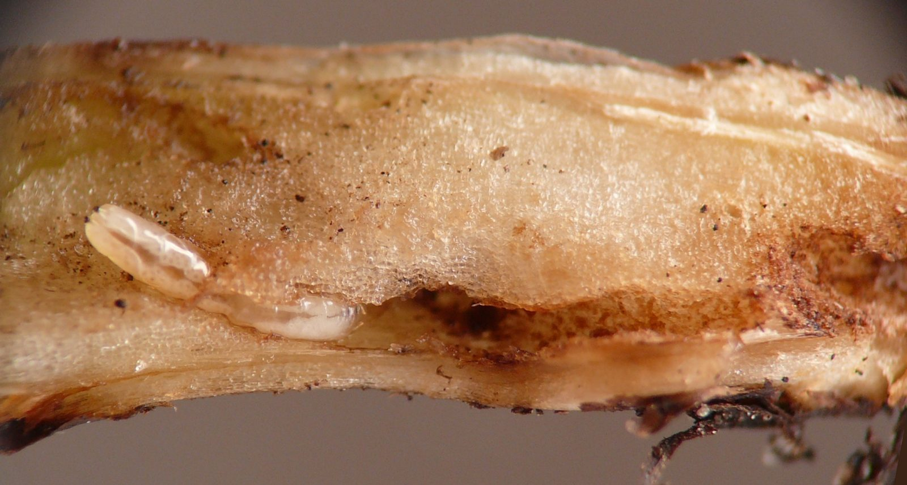
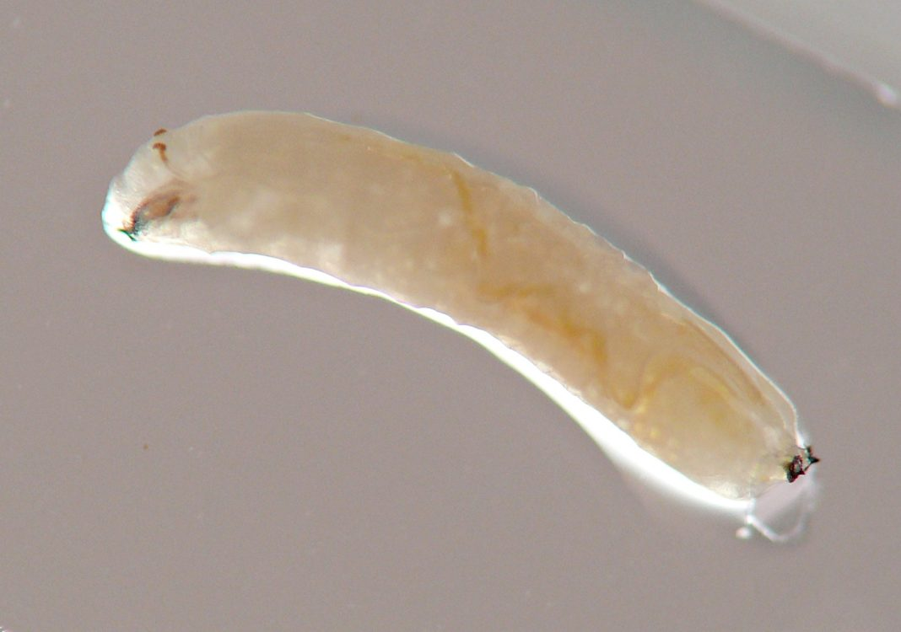
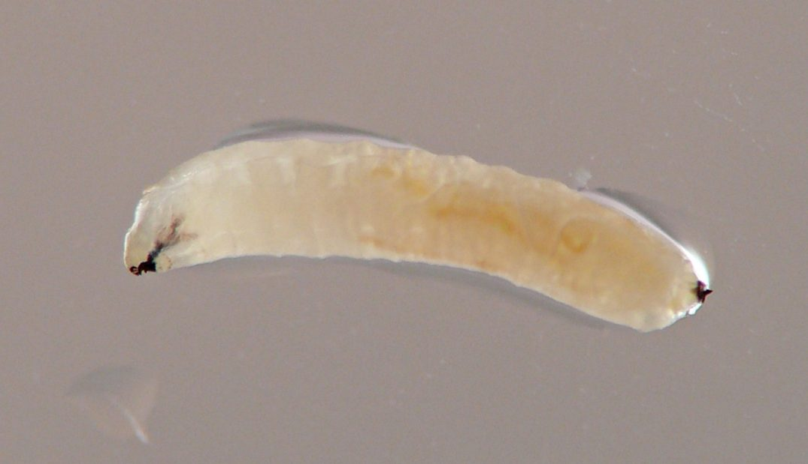
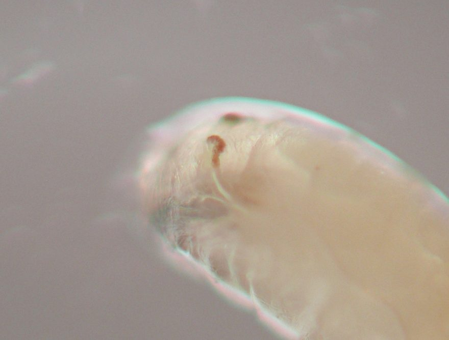
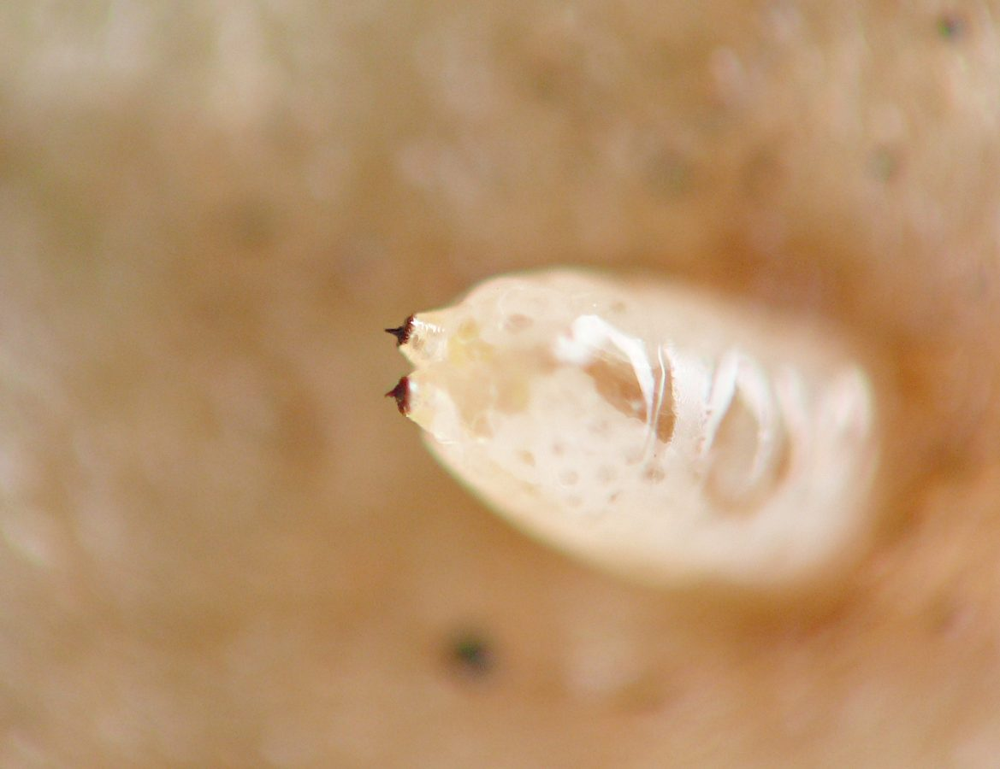
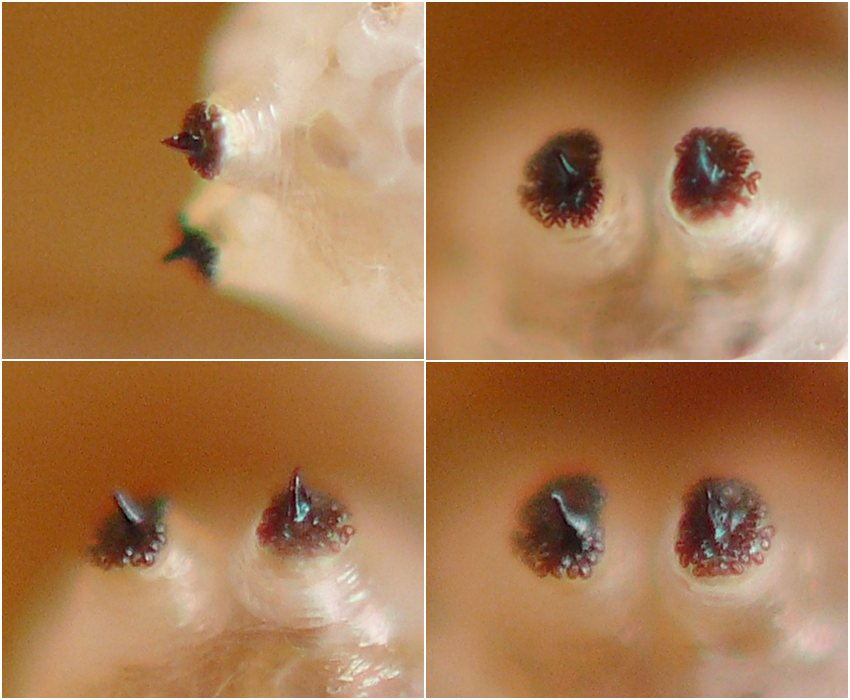
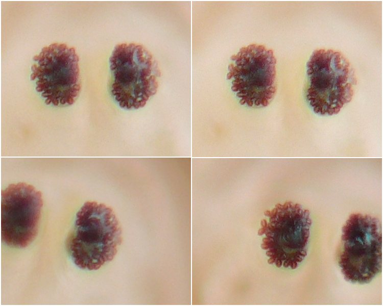

Stem borer (Diptera: Agromyzidae) in Mertensia
| Record no.: | 0808 |
|---|---|
| Feeding guild: | Stem borer |
| Taxonomy: | Diptera: Agromyzidae: Melanagromyza sp. |
| Stages observed: | trace, larva |
| Distribution observed: | IA |
| Hosts in Mertensia: | M. virginica (Virginia bluebells) |

On 17 May 2026 I encountered early tunnels of this species (tentatively identified as such) in the base of a stem of the host growing in my yard. The very narrow tunnels wound through the pith, slightly discoloring it, but were barely discernible.
A week later, on 24 May, also in my yard, I examined a second stem. The flowers and/or fruits had already dropped off this plant, leaving naked fruit stalks still attached, and the lower leaves were beginning to senesce. Inspecting the base of the stem, I found tunnels again, and this time they were more noticeable.
The tunnels were visible within the bottom ~60mm of stem pith. Their walls were dark brown in color at ground level, where the stem had broken off fairly easily when I handled it; a significant proportion of the pith at this location had been excavated, suggesting larval activity was concentrated here or in the roots. A few centimeters further up the stem, the tunnels were somewhat narrower and less darkly discolored.
I found a lone, middle-aged agromyzid larva in the tunnels approximately 1 cm above ground level. It was facing downward and feeding actively. The larva was pale creamy white in color, with the cephalopharyngeal skeleton and posterior spiracles black. The rear portion of the cephalopharyngeal skeleton appeared as if divided into 3 rods. The posterior spiracular plates each included roughly 30-38 bulbs arranged haphazardly around a strong central black horn, the entire structure borne on the end of a squat fleshy lobe projecting from the larva's rear end. The anterior spiracles each consisted of a short, curved, light brown fingerlike protrusion above the integument, and tracheae could be seen through the body wall connecting to these.
Taken together, these characteristics suggest Melanagromyza sp. as the identification. Adult female agromyzids appearing externally consistent with Melangromyza, most showing a bronze iridescence to the abdomen, have been previously photographed perching on flowers, leaves, or stems of this host from the end of March through early May in Illinois, Massachusetts, New York, Washington, DC, and Wisconsin (Clegg 2024; Kis 2023; Kis 2026; Orth 2026; Schuler 2018; Schulz 2024; Username munchinmanduca 2025). Assuming the identification of the larva in the current record is correct, to my knowledge this is the first record of an immature Melanagromyza tunneling in a stem of this host.

 Prev
Prev
{kind=link}
{kind=link}

{kind=link}

{kind=link}
{kind=link}

{kind=link}

{kind=link}

{kind=link}

{kind=link}

{kind=link}

{kind=link}
{kind=link}
{kind=link}
{kind=link}
{kind=link}
Coll. 05/24/26, photos same day (01-15).
- Clegg, B.F. 2024. Leaf-miner Flies (Family Agromyzidae). Contributor post on iNaturalist.org. Retrieved May 25, 2026 from https://www.inaturalist.org/observations/204778706.[return to in-text citation]
- Kis, B. 2023. Fly. Contributor post on BugGuide.net. Retrieved May 25, 2026 from https://www.bugguide.net/node/view/2241915.[return to in-text citation]
- Kis, B. 2026. Leaf-miner Flies (Family Agromyzidae). Contributor post on iNaturalist.org. Retrieved May 25, 2026 from https://www.inaturalist.org/observations/352387768.
- Orth, J.F. 2026. Leaf-miner Flies (Family Agromyzidae). Contributor post on iNaturalist.org. Retrieved May 25, 2026 from https://www.inaturalist.org/observations/357020139.[return to in-text citation]
- Schuler, J.A. 2018. Brachyceran Flies (Suborder Brachycera). Contributor post on iNaturalist.org. Retrieved May 25, 2026 from https://www.inaturalist.org/observations/12261728.[return to in-text citation]
- Schulz, K. 2024. Subfamily Agromyzinae. Contributor post on iNaturalist.org. Retrieved May 25, 2026 from https://www.inaturalist.org/observations/208826001.[return to in-text citation]
- Username munchinmanduca. 2025. Flies (Order Diptera). Contributor post on iNaturalist.org. Retrieved May 25, 2026 from https://www.inaturalist.org/observations/270498355.[return to in-text citation]
Page created: May 25, 2026. Last update: May 25, 2026